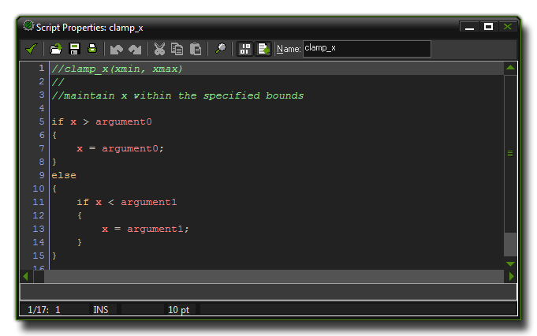
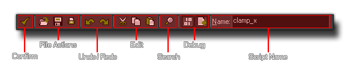
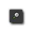
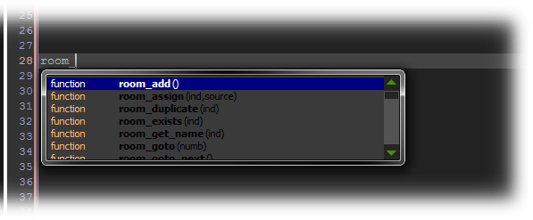
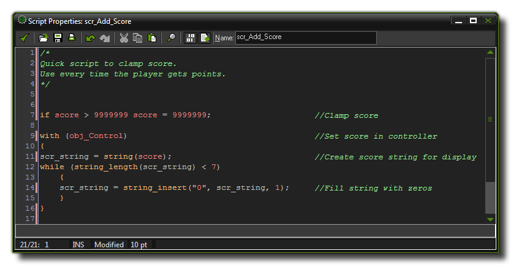
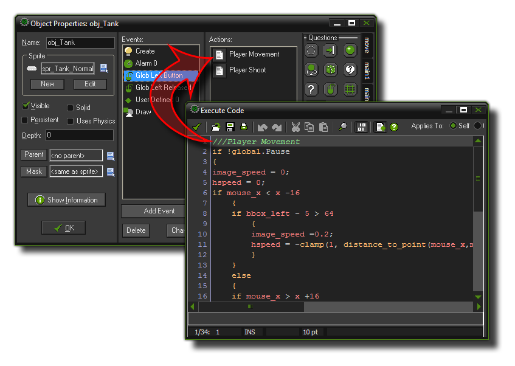
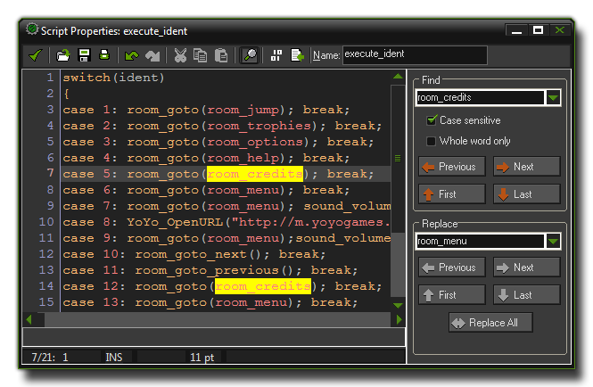

Scripts 脚本
GameMaker:Studio提供脚本功能来让你设计自己的函数。
Scripts are the way in which GameMaker:Studio permits you to design your own functions.
在GameMaker:Studio里，无论是对象还是房间和实例，你可以在各种地方使用代码，同时软件提供的大量内建函数可以让你编写游戏更加方便有效，但是在有些时候，创建属于你自己的函数是非常有用的。无论是用来完成某些特殊的功能，或者只是用来让你的代码看起来更整洁更有条理，又或者你想要在游戏的多个地方执行相同的代码，脚本都是你的不二选择。这也是为什么GameMaker:Studio提供了创建脚本的功能。
注意 : 如果你在使用 GameMaker:Studio 免费版 你每个游戏只能最多创建10个脚本。更多细节参见 这里。
You can use code in a number of places within GameMaker:Studio, from objects, to rooms and instances, and there are a number of built in functions that make your life easier when programming,
however it is often necessary for you to create your own functions to do a specific task, or to condense a large section of code into a more manageable chunk, or even to be able to re-use a particular
code block in many different places. That is why GameMaker:Studio gives you the ability to create scripts.
NOTE : If you are using the Free version of GameMaker:Studio you are limited to a maximum of 10 scripts per game. For more details see
here.
What Is A Script? 脚本是什么？
脚本是由 GameMaker:Studio 所使用的一种内建编程语言GML（Game Maker Language的缩写，更多内容参见 Reference）编写的。一旦你熟悉了 GameMaker:Studio 的使用，并且你想要发挥它最大的能力，那么强烈建议你去学习使用GML，它可以极大的扩展你创造游戏时的可能性。
一个脚本（和一个内建函数相似）可以接受不同类型的输入变量，具体来说它支持实数、字符串、布尔型以及一些特殊的变量类型（比如 all 和 no-one）。这些输入变量我们通常称作自变量或者参数。要在对象或者时间线中执行一个脚本，你可以使用 Execute Script 动作，不过你也可以在一个代码框里直接用脚本的名称来调用它，就和调用一个内建函数一样，再或者可以通过函数 script_execute 来调用。 如果你是用的脚本动作，你可以指定你要调用的脚本名称，以及最多5个参数。但是如果你在代码中调用脚本，那么你最多可以使用16个参数。
Scripts are written using GML (the Game Maker Language, covered in the Reference section), which is the built-in programming
language that GameMaker:Studio uses. Once you become more familiar with GameMaker:Studio and want to use it to its fullest extent, it is advisable to start learning to use this language, as it
greatly expands your possibilities when creating games.
A script (like any built-in function) can take different input variables, with real, string, boolean and special values like all or no-one being accepted, and these input variables are generally called
arguments, although they are also referred to as parameters. To execute a script from an object or a time line you can use the Execute
Script action , but you can also call it in a code box using the actual script name as if it were a function or even by using the GML function
script_execute. If you use the script action you can specify the script you want to execute, together with the up to five arguments, but if you are using the code editor to call a script, you can pass up to sixteen
arguments.
Using Scripts 使用脚本
入上文提到的那样，你可以传递数个参数给脚本，脚本会利用这些参数执行你写下的功能。为了让你更好的理解，让我们拿对象的一个动作来举个例子：你把动作添加到事件中，同时指定好一些相应的参数，那么你的实例就会执行你设置的动作。脚本和这个是完全一样的，唯一的区别就是脚本的内容需要你自己写，而动作的内容系统已经帮你写好了!你不仅可以向脚本提供一些参数，你也可以让你的脚本返回一个值来（使用关键字 return），这样你就可以用脚本来进行一些计算并返回结果或者在执行完一系列复杂的碰撞判定后将实例的id返回。请注意，当你执行了 return 语句，这会直接结束脚本的运行，也就是说任何在此之后的任何代码都不会被执行，这意味着你在写脚本时需要好好的考虑代码结构的问题。
As mentioned above, you can pass a number of arguments to a script, and it will use these to perform the task you have written it for. To understand this better, take, for example, an action (or a code in GML) and think about how it works... you place it in an event and specify a number of parameters and it will make your instance do something. Scripts are exactly the same, with the only difference being that you write them! Not only can you pass arguments into a script, but you can also ask a script to return a value too (using the return keyword), so you can use them to build calculating methods (mathematical methods) or give back an instance id after a complex collision detection or any number of things. Please note, however, that using return effectively ends the script, and so no code after it has been used will be executed, and this means that a certain amount of thought has to go into how your scripts are structured.
Saving and Loading Scripts 保存和载入脚本
GameMaker:Studio 可以把脚本保存到 *.txt 文件中，也可以从中载入脚本，这样你可以收集许多脚本以便在不同的项目中使用它们。要载入一个（或者多个）脚本到 GameMaker:Studio 中，只需要右键点击脚本资源文件夹（或者你创建的任何子文件夹）并且选择 Add Existing Script 即可。在接下来弹出的文件浏览对话框中选择一个 *.gmx 脚本文件或者一个 *.txt 文本文件即可。文件中的脚本就会被载入到 GameMaker:Studio 中。
保存脚本也是类似的步骤。你只需要右键点击一个脚本资源（或者一个脚本文件夹），然后选择 Export Selected Script。在接下来弹出的窗口中选择要导出的文件路径即可，脚本会保存在与其同名的 *.txt 文件中。如果你选择了多个脚本或文件夹，那么它们会被分别保存到相应的文件中去。
You can save and load scripts from *.txt files into GameMaker:Studio and in this way you can create collections of scripts and store them for use in multiple projects. To load a script (or
a collection of scripts) into GameMaker:Studio, simply right-click on the scripts resource folder (or any sub-folder that you have created in that section) and select Add Existing Script. This
will open the file browser and you can select either a script *.gmx, or a *.txt file. They will then be loaded in to GameMaker:Studio.
For saving scripts it's a similar process, where you right-click on a script (or a script folder) and select Export Selected Script. This will open up a window asking you where to export to, and when you
click on "Okay", the script will be saved as a *.txt file, with the name of the file being the same as the name of the script. If you have selected multiple scripts in a folder, they will all be saved, each with the
name of the script they correspond to.
Creating A Script 创建一个脚本
要在你的游戏中创建一个脚本，在 Resources 菜单中选择 Create Script，或者在资源树的脚本资源上右键点击并选择 Create Script，又或者直接点击上方工具栏里的创建脚本按钮。无论你使用哪种方式，接下来你都会看到这个窗口：
To create a script in your game, choose Create Script from the Resources menu, or right click on the scripts resource in the resource tree and select Create Script, or just click the create script button on the toolbar at the top of the main GameMaker:Studio screen. Whatever method you choose will open the following window :
 注意 : 脚本编辑器和对象的代码编辑器从功能上来说基本是一模一样。两者唯一的区别是脚本编辑器右上角有个 名字框 而代码编辑器的这里是选择执行代码的对象的（自己，对方或者指定的对象），就像直接用 DnD一样。
Note : The script editor window and the code editor window for objects have exactly the same functionality. The only difference between them is that the script editor has a name box whereas the code editor has the choice of which instance is to run the code (self, other or object), just like the D'n'D actions.
The Script Editor 脚本编辑器
当你打开脚本编辑器，首先你应该给你的脚本起一个名字。这个名字的字面意思应该复合你脚本的功能，同时也要简单易记，并且不应该以一个数字或符号（下划线 “_”除外）打头。这个名字会在之后的代码中用来调用你这个脚本。在脚本的起始写一些注释指明这个脚本使用的参数以及脚本的调用方式是一个很不错的习惯（见上图），尤其是当你作为一个成员参与一项团队工作，或者你游戏中使用了大量的脚本时。
当你给你的脚本起好名字并且写好注释后，你就要开始实际的编写这个脚本了。在编写的过程中，工具栏上的一些按钮可以帮助你更好的编写你的脚本。以下是这些按钮的大致介绍：
When you open the script editor, you should first give your new script a name. This should be something sensible and easy to remember and recognise, and must not start with a number or have any symbols (except
the under-bar "_" symbol). The name you give the script is the one you will use later as a function in code. It is also a good idea to write some comments at the start of the script (see the above image) to outline the script
arguments and how it should be used, especially if you are going to work as part of a team, or plan on using many scripts in your game.
Once you have done that you can start to write your script using standard GML functions and variables, using the many options along the Toolbar at the top to help you in this process. Here is a brief explanation of what each of
the toolbar buttons does :

确认
这会关闭脚本编辑器并且保存你的全部改动。注意这不会有任何是否保存的确认提示。
从文件中载入一个脚本
这会弹出一个文件选择框让你从一个文本文件中读取脚本。注意这会用文件中的代码覆盖你当前存在的任何内容！
保存脚本
这会将你当前的内容保存成一个 *.txt 文件以便你稍后载入。
打印脚本
这回弹出一个标准的打印窗口让你把当前的代码打印到纸上。
撤销
这会撤销上一次的改动，并且你可以连续的撤销之前的改动，最多达16次。
重做
如果你使用了撤销功能，那么你可以用这个按钮来反悔。你之前连续撤销了多少次，你就可以重做多少次。
剪切
用这个按钮来“剪下”一段代码并储存在剪贴板中。稍后你可以将代码粘贴到脚本的其它部分，或者别的脚本中，甚至粘贴到其它应用程序中。
复制
这会将你当前选中的代码复制到剪贴板中供你稍后将它粘贴到脚本的其它部分，或者别的脚本中，甚至粘贴到其它应用程序中。
粘贴
你可以用这个按钮来插入你剪贴板中的任何文本到你的代码中。

搜索
点击这个按钮会打开查找/替换选项卡。更多细节参见下文。
语法检查
点击这个按钮会打开或关闭语法检查功能。当你打开语法检查功能时，任何代码中被检测出的语法错误都会以红色（默认值）高亮显示，同时编辑器的底部会显示错误信息。注意不是所有的错误都能在此时被检测出来，但是大部分语法错误都可以被找到。
自动完成
当你开启了这个功能，如果你在输入的过程中暂停下来，一个自动完成窗口会弹出，随后你可以使用方向键或者鼠标选择你所想要输入的函数。下图展示了自动完成功能的效果：


Confirm
This will close the script editor and save any changes you have made. Be aware that there are no confirmation messages asking if you want to save.
Load A Script From A File
This will open the standard window for loading a script that has previously been saved as a text file. This will replace the existing script with the loaded one.
Save Script
This will save your current script as a *.txt file, ready to be used in another game.
Print Script
This will open a standard windows dialogue where you can select a printer and print out your current script on paper.
Undo
This will undo the last action, and you can repeatedly undo consecutive actions with this button, but note that the number of undos that can be performed is limited to 16.
Redo
If you have used the undo function, you can use this to go back to the state that you undid. This is limited to the number of undos that you have done previously.
Cut
You can use this to "cut" a section of your code out of the script. This code is stored to the clipboard and can then be pasted into another part of the same script, another script resource or even into some other program, independent of GameMaker:Studio.
Copy
This button will copy the currently selected code into the clipboard for use in another place, either the same script, another script or even an alternate program.
Paste
You can use this button to paste whatever text you have previously stored in the clipboard (with cut, or copy) into the current script.
Searh
Clicking this button will open the search/find and replace tab in the script editor. See below for more details.
Check Syntax
This button will toggle on and off the syntax checker of the script editor. When on, any errors in the code syntax will be highlighted in red (default) and a message will be displayed at the bottom of the editor explaining briefly what the problem is. Note that not all aspects can be tested at this stage but the syntax of your script will be tested, together with the existence of functions used.
Auto Complete
When this is switched on, if you pause when typing something an auto-complete window will pop up and you can then use the cursor keys or mouse to navigate to the function that you are looking for. The image below illustrates this :

Keyboard Shortcuts 快捷键
有很多的快捷键可以帮助你更好的编辑脚本：
- 按下 f2 会弹出 代码片段 窗口以便你插入一个常用的代码结构或者片段。你可以自定义要显示的代码片段，这些片段都储存在 GameMaker:Studio 安装目录下的 snippets.txt 文件中。你可以用任何文本编辑器来编辑这个文件。一个代码片段占一整行（不能有多余的空行）。每一行以代码片段的名字打头（这个名字会显示在代码片段菜单中），接下来是一个冒号(:) ，之后是实际的代码内容。用 # 来完成换行，把那些需要被自动选中的代码用 | 符号包围起来。修改时请务必参考那些已经存在的片段，同时强烈建议你先备份一下这个文件再去修改它。
- 你可以使用 f7 和 f8 来改变编辑器的字体大小。
- 如果你按下 f10 你可以开关代码着色。
- 按下 <CTRL> + F 会弹出查找和替换 选项卡 (参见下文).
- 如果你调用了别的脚本，那么你可以将鼠标移至任意脚本名称上同时 f12 来在一个新的脚本编辑器中打开对应的脚本。如果你的光标没有指向任何脚本名，那么就会打开帮助手册。
- 你可以用 <Ctrl> + Z 来撤销，用 <Ctrl> + <Shift> + Z 来重做。
- 用 方向键 来在代码中移动光标，在按下 <Ctrl> 的同时按左右方向键来跳转到上一个或下一个单词。如果你按下 <Ctrl> 的同时按了上下方向键，你可以滚动整个文本。
- 按住 <Shift> 的同时用方向键移动光标来选择文本。
- 按下 <Home> 键将光标移动至一行的起始位置，按下 <End> 键移动至行末。如果你同时也按下了 <Ctrl> 键，那么就会跳转到脚本的开头或结尾处。同时按 <Shift> 也可以选择文本。
- 按下 <TAB> 增加选中行的缩进，按下 <Shift> + <TAB> 减少选中行的缩进。
- 同时按下 <Ctrl> 和 <Backspace> 或者 <Delete> 来删除上一个或下一个单词。
- 如果你在 脚本设置 中关闭了自动完成功能，你可以通过按 <Ctrl> + <Space> 来强制弹出自动完成窗口，同时你可以随时按下 <ESC> 来关闭它。
- 你可以用鼠标来拖拽选中的文本到新的位置上。(同时按下 <Ctrl> 来复制。)
- 你可以用鼠标滚轮来上下滚动整个文本，如果你同时按下 <Ctrl> 光标也会随着文本一起滚动。和之前的快捷键一样，同时按住 <Shift> 来选择文本。
There are a number of keyboard shortcuts to help you navigate around the script editor, and each one is designed to help you get the most from this powerful tool :
- By pressing f2 you get the code snippet pop-up, which permits you to select one of the commonly used code methods. You can define your own code snippets if you want to, as the snippets are stored in the file snippets.txt in the folder in which GameMaker:Studio is installed. You can edit this file with any text editor, and each snippet is on a separate line (there should be no blank lines). It starts with the name of the snippet (which is what is shown in the menu) followed by the colon (:) followed by the actual snippet of code. Use # for a newline and put the text that needs to be selected first between | symbols. See the examples that are already in the file, and it is strongly recommended that you make a backup of it before you start changing it.
- You can use f7 and f8 to change the size of the font within the editor.
- If you press f10 you can toggle on or off the color coding for your code.
- Press <CTRL> + F to call up the search, find and replace options (see below).
- If you are using multiple scripts, then you can press f12 when the mouse is over any of the other script names to have it opened in a new window, ready for editing. If no script is selected, then the manual will be opened.
- You can use <Ctrl> + Z for undo and <Ctrl> + <Shift> + Z for redo.
- The arrow keys move you around in the text, and you can use <Ctrl> with the left and right arrow key to move to the beginning of the previous or next word. If you use <Ctrl> with the up and down arrows you also scroll the text.
- You can hold the <Shift> key and move with the arrow keys to select text.
- The <Home> key moves the cursor to the beginning of the line and the <End> key to the end of the line, and if you also hold <Ctrl> they move to the start and end of the script. Holding the <Shift> key you can select the text too.
- Use <TAB> to indent selected lines and <Shift> + <TAB> to unindent selected lines.
- Hold <Ctrl> with the <Backspace> or <Delete> key to delete until the beginning of the previous or next word.
- You can force the auto-complete window to appear if you have it switched off in the Scripts Preferences by pressing <Ctrl> + <Space>, and you can cancel it at anytime by pressing <ESC>.
- You can drag a selection with the mouse. (Use <Ctrl> to copy it.) The new location is immediately shown.
- You can scroll through the text with the mouse wheel and with <Ctrl> pressed the cursor scrolls with the text. As with previous shortcuts, holding the <Shift> key selects text.
Adding Comments and Naming Code Blocks 添加注释和命名代码块
给你的代码添加注释对于保持你编码时的效率很重要。注释可以使你的代码更加清晰，并将你的代码划分成不同功能的片段让你对于代码的功能和为什么要写它一目了然。同时这意味着当你在一个团队中工作时你可以在注释中添加一些给其他成员看的提示，这样可以让别人准确的理解你代码的功能以及你完成了哪些功能。即便你是独立开发者，给自己的代码写注释也是很有必要的，尤其是在你中途放下这个项目并且过了很久才重新投入开发的时候。
给你的代码加上注释很简单，你只需要在一行文本的开头加上 "//" 或者用 "/* text here */" 把一段文本包围起来即可。下面的图片展示了这两种注释的效果：
Commenting your code is very important for maintaining productivity as it keeps things clear and separates sections of code in such a way that it is obvious what each part does and why it is there. It also means that if
you are working in a team then you can leave notes for other members and that they will know exactly what you have done or what a specific section of code is for. Even if you are a solo developer, leaving comments
for your code is important, especially if you have to leave the project and come back to it at a later date.
Commenting your code is simple, as you just have to use "//" before any line of text or you can comment out whole paragraphs by using "/* text here */". The following image illustrates a
script using both these methods:

如果你在使用 脚本编辑器，你可以通过在开头加上如下形式的注释来给你的代码起个标题：
///在这里写上注释!
这个注释就会被用作你这段代码的“名字”，就如下图所示：
If you are in the code editor, then you can also give your code box a title by making a comment for the first line using the following format:
///Your Comment Here!
This comment will then be used for the "name" of that codebox (this works for codeboxes added to Timelines too) as illustrated by the following image:

Color coding 代码着色
也许你已经注意到了，一部分代码是用彩色显示出来的。脚本编辑器“知道”你使用了哪些已经存在的对象、内建变量和函数并且用颜色把它们标记了出来。代码着色帮助你避免犯错，比如说当你拼错某些名称或者使用了关键字作为变量名时，你一眼就能看出来自己犯了错。当然如果你不喜欢代码着色功能，你也可以在 设置 中把它关掉（或者直接按F10），或者你也可以自定义代码着色时使用的颜色。
As you might have noticed, parts of the script text are colored. The script editor "knows" about existing objects, built-in variables and functions, etc. and color codes them accordingly. Color-coding helps a lot in avoiding mistakes, in particular, you see immediately if you have misspelled some name or use a keyword as a variable, or have a syntax error. However, if you don't like the color coding, in the Preferences you can switch it on and off (you can also use F10) as well as customise the colors that are used.
Search, Find And Replace 查找和替换
当你在写代码的时候，你经常需要在一大段代码中去查找一些特定的片段，有时候还需要把它替换成别的内容，或者只是想看看以前写的代码而已。为了完成这个操作，GameMaker:Studio 的脚本编辑器提供了一个查找和替换功能选项卡，只需要点击工具栏上的Search按钮，即可在代码窗口的右侧显示出如下所示的面板：
When working with code, it is common that you will want to find some piece you have written in a large section and then replace it something different, or simply see at a glance where a line of code lies within the function. To this end, the GameMaker:Studio script editor has a search, find and replace function that can be accessed by pressing the Search button in the toolbar. This will open up a panel on the right of the code window which looks as follows :
 你可以在上方输入你要查找的字符串（注意代码中任何匹配的字符串都会立刻用黄色背景高亮显示），同时你也可以指定查找的内容是否需要区分大小写，毕竟GML中的变量名和函数名都是大小写敏感的；另外也可以指定是否整字匹配。注意，编辑器会记录你最近几次搜索的设置，因此你可以点击下拉列表来重新载入以前的搜索。通过输入框下方的几个按钮，你可以跳转到上一个、下一个、第一个和最后一个匹配处，当前匹配的字符串会被自动选择以便你进行修改。
同时你也可以用这个面板来将搜索到的内容替换成另外的字符串。只需要简单的在下面的输入框中输入你想替换成的内容然后点击下方的按钮来完成替换。你可以替换上一个、下一个、第一个、最后一个或者全部匹配项。
You can type the find string at the top (note that in the code all occurrences of the find string are immediately shown with a yellow background), and you can indicate whether the search must be case sensitive, which is normally
what you want as variable and function names in GML are also case sensitive, and whether you want to only search for whole words. Note that the editor remembers your most recent searches, and you can click on the drop down
button to call them up and re-select them. With the buttons underneath the search string input you can now move to the previous, next, first, and last occurrence of the find string, and this string will be selected in the text so that
you can edit it.
You can also use this panel to replace anything that you have previously searched for by simply typing in the new code that is to be used and pressing one of the buttons that are highlighted underneath.
x. Now you can use the buttons to replace the previously selected, the next one to be selected, the first, the last or all occurrences of the code searched for.
-noisyfox-